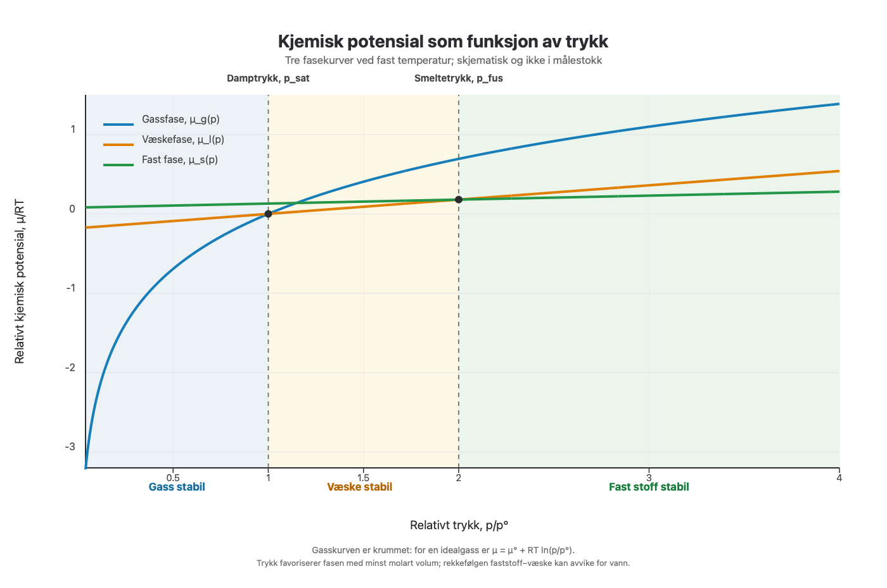
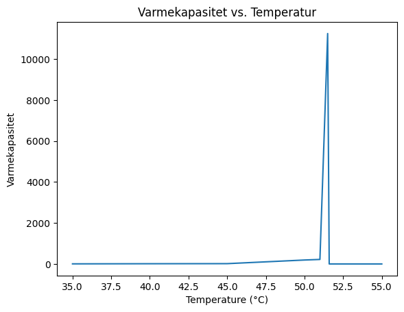

Uke 7 – Faser og faseoverganger#
Diskusjonsoppgaver#
Oppgave 1: Gibbs-energi og spontanitet.#
Forrige uke jobbet vi med Gibbs-energi og hvordan en minimering av den frie energien fører til en stabilisering av systemet. Nå skal vi, ved hjelp av entropibetraktninger ved konstant trykk og temperatur, undersøke hvorfor endringen i fri energi må være negativ, \(\Delta G<0\), for at en prosess skal være spontan.
a) Hva er uttrykket for endringen i Gibbs-energien, \(\Delta G\), ved konstant temperatur?
Svar Gibbs-energien er definert som \(G = H - TS\). Siden \(H\), \(T\) og \(S\) alle er tilstandsfunksjoner, er også \(G\) en tilstandsfunksjon. Ved konstant temperatur får vi derfor
b) La oss repetere entropi og entalpi. Hvordan henger den totale entropiendringen, \(\Delta S_{\text{tot}}\), sammen med entropiendringene i systemet og omgivelsene, og hva kan vi si om \(\Delta S_{\text{tot}}\) for en spontan prosess? Hva er den klassiske definisjonen av entropi, og under hvilke betingelser kan vi skrive at \(q_{p,\text{sys}} = \Delta H_{\text{sys}}\)?
Svar Den totale entropiendringen er summen av bidragene fra systemet og omgivelsene. For en spontan, irreversibel prosess er den større enn null; for en reversibel prosess er den lik null:
Den klassiske definisjonen av entropi er
Dersom systemet holdes ved konstant trykk og temperatur og kun utfører pV-arbeid, er varmen det tar opp \(q_{p,\text{sys}} = \Delta H_{\text{sys}}\). Omgivelsene avgir da varmen \(-\Delta H_{\text{sys}}\) ved den samme konstante temperaturen \(T\), og varmeutvekslingen med omgivelsene kan behandles som reversibel. Dermed har vi
Dette kommer direkte fra termodynamikkens 1. lov for systemets indre energi:
Dersom systemet kun utfører pV-arbeid mot et konstant ytre trykk \(p\), slik at \(w=-p\Delta V\), får vi:
Løser vi for \(q\), får vi:
Altså gjelder \(q_{p,\text{sys}} = \Delta H_{\text{sys}}\) ved konstant trykk og temperatur når systemet kun utfører pV-arbeid:
c) Et system er i termisk kontakt med omgivelsene, som kan betraktes som et stort varmereservoar med konstant temperatur \(T\). Hvordan kan vi uttrykke entropiendringen til omgivelsene, \(\Delta S_{\text{omg}}\), ved hjelp av systemets entalpiendring, \(\Delta H_{\text{sys}}\)? Anta konstant trykk og at systemet kun utfører pV-arbeid.
Svar
Fra oppgave b) vet vi at \(q_{p,\text{sys}} = \Delta H_{\text{sys}}\) ved konstant trykk når systemet kun utfører pV-arbeid. Siden systemet er i termisk kontakt med omgivelsene, går varmen som tilføres systemet ut fra omgivelsene. Altså:
Entropiendringen til omgivelsene blir da:
d) Sett svaret fra oppgave c) inn i uttrykket for den totale entropiendringen, og bruk det til å bestemme hvordan \(\Delta G\) avhenger av \(\Delta S_{\text{tot}}\).
Fra termodynamikkens andre lov vet vi at den totale entropien kun kan øke for en spontan (irreversibel) prosess, eller være uendret i likevekt, altså \(\Delta S_{\text{tot}} \geq 0\). Siden \(T > 0\), følger det at \(\Delta G \leq 0\), med \(\Delta G = 0\) i likevekt.
Merk den viktige balansen i \(\Delta G = \Delta H - T\Delta S\): en prosess kan gjerne være endoterm (\(\Delta H > 0\)) og likevel være spontan, så lenge entropiøkningen i systemet er stor nok (\(T\Delta S > \Delta H\)). Tilsvarende kan en eksoterm prosess være ikke spontan dersom entropien i systemet synker tilstrekkelig.
Obs! Dette gjelder et lukket system der \(T\) og \(p\) holdes konstant, og der systemet kun utfører pV-arbeid.
Oppgave 2: Kjemisk potensial#
a) Hvordan definerer vi det kjemiske potensialet ut fra fundamentallikningen for Gibbs-energi, og hvordan kan vi tolke det?
Svar
Fra fundamentallikningen
kan vi definere det kjemiske potensialet til komponent \(j\) som den partielle deriverte
der alle de andre stoffmengdene, \(n_i\) for \(i \neq j\), holdes konstante. Det kjemiske potensialet beskriver drivkraften bak overføring av partikler mellom faser. Ved kjemiske reaksjoner inngår reaktantenes og produktenes kjemiske potensialer i reaksjonens termodynamiske drivkraft. I mange lærebøker omtales det som «molar Gibbs-energi», noe som strengt tatt bare gjelder for et enkomponentsystem. Generelt er det kjemiske potensialet den partielle molare Gibbs-energien til komponenten.
b) Nå skal vi se nærmere på uttrykket for det kjemiske potensialet i et enkomponentsystem:
Her er \(V_m\) og \(S_m\) henholdsvis molart volum og molar entropi. Sammenhengen er nyttig når vi skal undersøke hvordan faseoverganger avhenger av trykk og temperatur. Den brukes også til å utlede Clapeyron-likningen, som beskriver hvordan likevektstrykket for en faseovergang endres med temperaturen. Men hvor kommer uttrykket fra?
Utled uttrykket slik: Skriv opp fundamentallikningen for Gibbs-energien. Bruk deretter sammenhengen \(G=n\mu\) for et enkomponentsystem, og differensier den. Sett de to uttrykkene for \(dG\) lik hverandre, og vis at du får uttrykket for \(d\mu\) ovenfor.
Svar
For et enkomponentsystem med total stoffmengde \(n\) er \(G = n\mu\). På differensialform blir dette
Fundamentallikningen for én komponent (der summen reduseres til ett ledd, \(\mu\,dn\)) er
Setter vi de to uttrykkene for \(dG\) lik hverandre, får vi:
Vi ser at \(\mu\,dn\)-leddene står på begge sider og kansellerer hverandre, slik at vi sitter igjen med
Deling med antall mol \(n\) gir den søkte definisjonen:
Dette gjør det mulig å lage fasediagrammer som viser hvilke faser som er stabile ved ulike temperaturer og trykk. Ved en faseovergang er likevektsbetingelsen mellom fasene \(\alpha\) og \(\beta\) at \(\mu_{\alpha} = \mu_{\beta}\).
c) Hvordan avhenger det kjemiske potensialet til et enkomponentsystem av temperaturen? Se på figuren, som viser kjemisk potensial som funksjon av temperatur ved konstant trykk. Hvorfor er kurvene ulike for fast stoff, væske og gass, og hva er stigningstallet til hver kurve? Ta utgangspunkt i definisjonen av \(d\mu\).

Svar
For en generell endring i trykk og temperatur er den totale differensialen
Sammenligner vi dette med uttrykket \(d\mu = V_m\,dp - S_m\,dT\) fra forrige deloppgave, får vi
Det kjemiske potensialet minker når temperaturen øker, siden stigningstallet er \(-S_m < 0\) og \(S_m > 0\). En gass har høyere \(S_m\) enn kondenserte faser (tenk tilbake til diskusjonene rundt mikrotilstander), og det kjemiske potensialet faller derfor raskere i en gass enn i væsker og faste stoffer.
Ved konstant trykk reduseres uttrykket til \(d\mu = -S_m\,dT\), slik at stigningstallet til hver kurve er
Alle kurvene synker med temperaturen, men med ulik bratthet fordi den molare entropien varierer mellom fasene:
Gassen har et enormt antall tilgjengelige mikrotilstander og dermed den bratteste kurven. Faststoffet er mest ordnet og har flatest kurve, mens væsken ligger midt imellom. Den stabile fasen ved en gitt temperatur er den med lavest kjemisk potensial. Dette gir mønsteret vi ser i figuren:
Ved lave temperaturer ligger kurven for fast stoff lavest: faststoffet er stabilt.
Ved \(T_f\) krysser fast- og væskekurvene (\(\mu_{\text{fast}} = \mu_{\text{væske}}\)): dette er smeltepunktet.
Mellom \(T_f\) og \(T_b\) er kurven for væske lavest: væsken er stabil.
Ved \(T_b\) krysser væske- og gasskurvene (\(\mu_{\text{væske}} = \mu_{\text{gass}}\)): dette er kokepunktet.
Over \(T_b\) har gassen lavest kjemisk potensial og er stabil.
Merk at kurvene er tegnet som rette linjestykker mellom faseovergangene. Det er en god tilnærming fordi \(S_m\) (og dermed stigningen) varierer lite med temperaturen innenfor én fase. Ved hver faseovergang ser vi en «knekk» i kurven: kurven er kontinuerlig, men stigningstallet endres brått fordi fasen (og dermed \(S_m\)) endres.
d) Hva betyr det i praksis at det kjemiske potensialet minker når temperaturen øker?
Svar
Det kjemiske potensialet kan tolkes som partiklenes «fluktstendens» fra en fase: partikler beveger seg spontant mot fasen med lavest kjemisk potensial. Siden \(\left(\frac{\partial \mu}{\partial T}\right)_p = -S_m\), synker \(\mu\) for alle faser når temperaturen øker, men raskest for fasen med størst molar entropi.
Intuisjonen bak dette er at systemet har tilgang til flere tilstander ved høyere temperatur (tenk på hvordan energifordelingen blir bredere når \(T\) øker). Den energetiske kostnaden ved å «legge til» eller «fjerne» en partikkel er lavere i en fase med høy entropi enn i en fase med lav entropi. En gass har langt flere mikrotilstander enn væsker og faste stoffer, og dermed faller \(\mu\) for gassen brattest når temperaturen øker.
I praksis betyr dette at gassen «henter igjen» de kondenserte fasene når vi varmer opp:
Ved lave temperaturer ligger kurven for fast stoff lavest, og faststoffet er den stabile fasen.
Ved smeltepunktet \(T_f\) krysser fast- og væskekurvene (\(\mu_{\text{fast}} = \mu_{\text{væske}}\)), og over denne temperaturen er væsken lavest og stabil.
Ved kokepunktet \(T_b\) gjelder \(\mu_{\text{væske}} = \mu_{\text{gass}}\), og over denne temperaturen er gassen lavest og stabil.
Dette forklarer hvorfor faseovergangene fast \(\to\) væske \(\to\) gass skjer når temperaturen øker ved gitt trykk. Det forklarer også hvorfor fordampningen går raskere når vi varmer opp: forskjellen mellom \(\mu_{\text{væske}}\) og \(\mu_{\text{gass}}\) blir mindre, og flere partikler går over i gassfasen.
e) Hvordan avhenger det kjemiske potensialet av trykket ved konstant temperatur? Hvordan ser kurvene ut for gass, væske og fast stoff, og hvilken fase er stabil ved ulike trykk?
Svar
Ved konstant temperatur gjelder \(d\mu = V_m\,dp\), slik at \(\left(\frac{\partial \mu}{\partial p}\right)_T=V_m>0\). Det kjemiske potensialet øker derfor med trykket for alle faser. Stigningstallet er molart volum: gassen har langt større \(V_m\) enn kondenserte faser, mens molare volum for væske og fast stoff vanligvis er mye mindre.
For en idealgass er \(V_m=RT/p\). Integrasjon gir \(\mu(T,p)=\mu^\circ(T)+RT\ln(p/p^\circ)\), altså en krummet kurve som stiger bratt ved lavt trykk og flater ut når trykket øker. For væsker og faste stoffer varierer \(V_m\) langt mindre med trykket, så kurvene kan ofte tilnærmes som rette linjer over et begrenset trykkområde.
Ved et gitt trykk er den stabile fasen den som har lavest kjemisk potensial. I figuren er gassfasen stabil ved lavt trykk, væskefasen ved mellomliggende trykk og faststoffet ved høyere trykk. Denne rekkefølgen gjelder for det skjematiske eksempelet; generelt avhenger den av stoffet og temperaturen. Trykkøkning favoriserer fasen med minst molart volum.

f) Se plottene av kjemisk potensial mot temperatur nedenfor. Forklar forskjellen mellom stoffene i plott a) og b), og gi et eksempel på et stoff som oppfører seg som i hvert plott.

Svar
Begge plottene viser kurvene for fast stoff og væske ved to trykk (lavt og høyt). Krysningene mellom kurvene er smeltepunktene \(T_f\). Vi ser hvordan dette punktet flytter seg når trykket økes. Grafisk skyldes forskjellen at trykkøkningen «løfter» hver kurve med et stykke \(\approx V_m\,\Delta p\): løftes væskekurven mer enn kurven for fast stoff, flyttes krysset til høyere temperatur, og motsatt.
Plott a): Smeltepunktet øker med trykket (\(T_f \rightarrow T_f'\)). Dette er den vanlige oppførselen og gjelder for de fleste stoffer: ved smelting utvider de seg, altså \(V_{m,\text{væske}} > V_{m,\text{fast}}\). Differansen i molart volum er da positiv, \(\Delta_{\text{fus}}V_m = V_{m,\text{væske}} - V_{m,\text{fast}} > 0\), og sammen med smelteentalpien \(\Delta_{\text{fus}}H_m > 0\) gir Clapeyron-likningen
Eksempler på stoffer som oppfører seg som i plott a), er karbondioksid og benzen.
Plott b): Smeltepunktet senkes ved trykk (\(T_f' \leftarrow T_f\)). Dette er et sjeldnere unntak som gjelder stoffer der faststoffet har større molart volum enn væsken, \(\Delta_{\text{fus}}V_m < 0\); dvs. stoffer som er tettere i væskefasen enn i fast fasen. Fra Clapeyron-likningen følger det da at \(\frac{dp}{dT} < 0\), altså at smeltekurven både i dette plottet og i et \(T\)–\(p\)-fasediagram faller med økende trykk. Derfor flyttes smeltepunktet til en lavere temperatur når trykket økes.
Eksempel på molekyl: \(\mathrm{H_2O}\). Is har større molart volum enn flytende vann (derfor flyter isen på vannet), og smeltepunktet til isen senkes av trykket.
Disse to plottene gir en grafisk forklaring for at smeltekurven (grensen mellom fast fase og væske) i et \(T\)–\(p\)-fasediagram kan gå enten oppover (plott a, de fleste stoffer) eller nedover (plott b, blant annet vann).
Oppgave 3#
a) Hva er en fase?
Svar En fase er en makroskopisk, fysisk homogen del av et system. Innenfor én fase er de intensive egenskapene og sammensetningen tilnærmet ensartet. Ulike faser er adskilt av fasegrenser. Is og flytende vann er for eksempel to faser, selv om begge består av H\(_2\)O, fordi de har ulik struktur og ulike fysiske egenskaper.
b) Angi antall faser og frihetsgrader det er i hvert av punktene markert i figuren nedenfor.

Svar Figuren viser et fasediagram for ett rent stoff, så antall komponenter er \(C=1\). Gibbs’ faseregel er \(F=C-P+2\), der \(P\) er antall faser.
Punkt a: Punktet ligger inne i et faseområde. Det er én fase, så \(F=1-1+2=2\). Temperatur og trykk kan varieres uavhengig av hverandre så lenge punktet blir værende i samme område.
Punkt b: Flere fasegrenser møtes i punktet, slik at tre faser sameksisterer. Da er \(F=1-3+2=0\), og både temperatur og trykk har bestemte verdier. Punkt b er dermed også et trippelpunkt.
Punkt c: Punktet er trippelpunktet, der tre faser sameksisterer. Da er \(F=1-3+2=0\): både temperatur og trykk har bestemte verdier.
Punkt d: Punktet ligger også på en fasegrense mellom to faser. Derfor er \(F=1-2+2=1\), og bare én av størrelsene temperatur og trykk kan velges uavhengig.
c) Hva er en superkritisk væske?
Svar Et superkritisk fluid er et stoff ved temperatur og trykk over det kritiske punktet. I det kritiske punktet blir forskjellen mellom væske og gass borte: tetthetene blir like, og fasegrensen mellom dem forsvinner. Over det kritiske punktet finnes derfor én homogen fase, ikke en separat væske og gass. Den kalles ofte en superkritisk væske, selv om den ikke er en væske i vanlig forstand. For vann er det kritiske punktet omtrent 374 °C og 22,1 MPa.
d) Hva skjer med temperaturen under kontinuerlig oppvarming av vann når systemet når kokepunktet? Hvordan påvirker dette varmekapasiteten?
Svar For oppvarming ved konstant trykk holder temperaturen seg på kokepunktet mens væsken fordamper. Den tilførte varmen går da hovedsakelig til faseovergangen, altså til å omdanne væske til gass, og ikke til å øke temperaturen. Temperaturen begynner å stige igjen når all væsken har fordampet.
Varmekapasiteten ved konstant trykk er \(C_p=(\partial H/\partial T)_p\). I en idealisert beskrivelse gir tilførsel av varme uten temperaturøkning en singularitet i varmekapasiteten ved faseovergangen. I målinger vises dette gjerne som en svært høy, men endelig topp fordi oppløsningen er begrenset.
Nedenfor vises hvordan ulike termodynamiske størrelser endres når et system gjennomgår en faseovergang.
e) Hva er forskjellen mellom en første- og en andreordens faseovergang?
Svar Ved en førsteordens faseovergang er Gibbs-energien kontinuerlig, men dens første deriverte er diskontinuerlige. Siden \(S=-(\partial G/\partial T)_p\) og \(V=(\partial G/\partial p)_T\), innebærer dette et sprang i entropi og/eller volum. Overgangen har latent varme; ved konstant trykk er \(\Delta H_{\mathrm{tr}}=T\Delta S_{\mathrm{tr}}\).
Ved en andreordens faseovergang er Gibbs-energien og dens første deriverte kontinuerlige, men en eller flere andrederiverte størrelser er diskontinuerlige eller divergerer. Varmekapasiteten kan for eksempel ha et sprang eller en skarp topp. Det er ingen latent varme ved en slik overgang.
f) Se på grafene og avgjør om det skjer en faseovergang, og om den i så fall er av første eller andre orden.

Svar
A: Ingen faseovergang vises i temperaturintervallet. De viste størrelsene endres jevnt, uten sprang eller singularitet.
B: Dette er en førsteordens faseovergang ved \(T_c\). Gibbs-energien har en knekk, og volum, entalpi og entropi har sprang. Varmekapasiteten er diskontinuerlig i skissen; latent varme gir et singularitetsbidrag i den idealiserte beskrivelsen.
C: Dette er en andreordens, kontinuerlig faseovergang ved \(T_c\). Gibbs-energien og dens første deriverte forblir kontinuerlige, mens andrederiverte størrelser som varmekapasiteten får en skarp topp eller en diskontinuitet. Det er ikke noe sprang i entalpi, og dermed ingen latent varme.
Regneoppgaver#
Oppgave 1#
a) Hvor mange faser er det i følgende systemer, og hvorfor?
En løsning med NaCl?
En blanding av is og vann (slush)?
𝐶𝑎𝐶𝑂3(𝑠)→𝐶𝑎𝑂(𝑠)+𝐶𝑂2(𝑔)
b) For de tre systemene i oppgave a, hvor mange komponenter er det i disse eksemplene? Angi så antall frihetsgrader, og hva frihetsgradene er for hvert system.
Svar
NaCl: 1 fase - 2 komponenter (trenger kun H2O og NaCl for å danne alle speciene tilstede)
Blanding av is og vann: 2 faser, 1 komponent
CaCO3: 3 faser (2 faste med ulik kjemisk sammensetning, én gassfase). Antall komponenter:
CaCO3: Antar at vi starter med kun 𝐶𝑎𝐶𝑂3(𝑠) og lar likevekten \(CaCO_3(s) \rightleftharpoons CaO (s) + CO_2(g) \) instille seg. En relasjon forbundet med at vi har en likevekt mellom fast fase og gass er at \(K_p=p_{(CO_2)}\). En annen relasjon er at \(n_{CO_2}=n_{CaO}\), ettersom antallet mol dannet av hvert produkt må være likt når vi kun starter med reaktanten.
Antallet specier er 3, og antallet komponenter blir da: \(c = s-r = 3-2 = 1\). Vi trenger kun reaktanten for å danne alle speciene i denne likevekten. Hadde vi antatt vilkårlige mengder av alle speciene (f.eks. startet med litt \(CO_2(g)\) og \(CaO(s)\) allerede tilstede) vil kun relasjonen \(K_p=p_{(CO_2)}\) gjelde, og \(c=2\).
Oppgave 2#
Når en væske med molar masse \(46.1 \text{g mol}^{-1}\) fryser ved \(-3.65^{\circ}C\), endres tettheten fra \(0.789 \text{g cm}^{-3}\) til \(0.801 \text{g cm}^{-3}\). Den molare smelteentalpien til væsken er \(8.68 \text{kJ mol}^{-1}\). Estimer frysepunktet for væsken ved \(1 \text{MPa}\).
Svar
Clapeyron-likningen beskriver hvordan en faseovergang påvirkes av trykk:
Utledning:
Ved en faseovergang må de to fasene være i likevekt med hverandre, dvs. at de kjemiske potensialene må være like. Siden vi ser på avhengigheten av trykk og temperatur kan dette skrives som:
Det kjemiske potensialet tilsvarer den molare Gibbs-energien, \(\mu = G_m\). Differensialformen for molar Gibbs-energi er:
Setter vi \(dG_{m,A}=dG_{m,B}\) for de to fasene, får vi:
Dette gir Clapeyron-likningen.
Ved å bruke at \(∆G = 0\) ved faseovergang kan denne gjøres om til:
Integrasjon gir videre:
Vi finner forskjellen i molart volum ved å bruke at:
Som gir:
Slik at:
\(∆V_{m}=M\left(\frac{1}{\rho_{s}}-\frac{1}{{\rho }_{l}}\right)=46.1\ g.mol^{-1}\cdot \left(\frac{1}{0.789 \, g.cm^{-3}}-\frac{1}{0.801 \, g.cm^{-3}}\right)=-0.8753 \, cm^{3}.mol^{-1}\)
Siden det ikke er gitt noen annen informasjon, antar vi at frysepunktet ved \(-3.65 ^{\circ}C\) er oppgitt ved standardtrykk, \(1 \, atm\). Ved innsetting av verdiene i Clapeyron-likningen fås da:
\(1\ MPa=1 \, atm+\frac{8680 \, J.mol^{-1}}{-0.8753 \, cm^{3}.mol^{-1}}\cdot \left(\frac{T-269.5 \, K}{269.5 \, K}\right)\)
\(1\ MPa=0.101325 \, MPa+\frac{8680 \, J.mol^{-1}}{-0.8753 \, cm^{3}.mol^{-1}}\cdot \left(\frac{T-269.5 \, K}{269.5 \, K}\right)\)
\(0.898675\cdot {10}^{6} \, Pa\cdot \frac{-0.8753\cdot {10}^{-6} \, m^{3}.mol^{-1}}{8680 \, J.mol^{-1}}\cdot \ 269.5\ K\ +\ 269.5\ K\ =\ T\)
\(T = 269.48 K\)
Her ble det brukt at \(Pa\cdot \ m^{3}\ =\ J\). Selv om trykket altså øker med omtrent \(0.9 \, MPa\), minker smeltepunktet minimalt.
Til sammenligning er trykkforskjellen mellom havnivå og toppen av Mount Everest omtrent \(67 \, kPa\) (\(0.067 \, MPa\)). Kokepunktet for vann på toppen av Mount Everest er omtrent \(68 ^{\circ} C\), sammenlignet med \(100 ^{\circ} C\) ved havnivå. Dette skyldes at det molare volumet øker langt mer ved væske–gass-overgangen enn ved smelting.
Oppgave 3#
Den molare fordampningsentalpien for vann ved \(100^{\circ}C\) er \(40.63 \text{kJ mol}^{-1}\). Finn arbeidet som utføres av systemet når \(2.00 \text{mol}\) vann fordamper ved \(100^{\circ}C\) og \(1.00 \text{atm}\) trykk. Finn også endringene i systemets indre energi \(\Delta U\), Gibbs-energi \(\Delta G\) og entropi \(\Delta S\). Tettheten for vann i væskeform ved \(100^{\circ}C\) er \(0.9584 \text{g cm}^{-3}\), og tettheten for vanndamp ved samme temperatur er \(0.000596\text{g cm}^{-3}\).
Svar
Ved et trykk på \(1 \, atm\):
Arbeidet som systemet gjør mot et konstant ytre trykk (\(1 \, atm\)) når gassen dannes er:
\(w=\ -p_{ex}\cdot \Delta V=\ -p_{ex}\cdot n\cdot \Delta V_{m}\)
Den molare endringen i volum finner vi, igjen, ved hjelp av tetthetene:
Ettersom vi har oppgitt den molare fordampningsentalpien kan vi bruke definisjonen på entalpi for å finne endringen i indre energi:
Siden vi er ved en faseovergang må systemet være i likevekt, og \({\Delta }_{\mathrm{vap}}G=0\).
Entropien finner vi ut fra definisjonen på entropi ved varmeoverføring:
Oppsummert:
Oppgave 4#
Normalkokepunktet for etylenglykol (\(\text{C}_2\text{H}_6\text{O}_2\)) er \(197^{\circ}C\), og den spesifikke fordampningsentalpien er \(801 \text{J g}^{-1}\). Finn temperaturen der etylenglykol koker i et destillasjonsoppsett når trykket er \(50.0 \text{Torr}\)
Svar
Den spesifikke fordampningsentalpien er entalpiendring per masseenhet, og fordampningsvarmen for etylenglykol er altså \(801 J.g^{-1}\), som oppgitt i oppgaveteksten. Videre har vi \(M_{C_{2}H_{6}O_{2}}=62,058\ g.mol^{-1}\). For den molare fordampningsentalpien får vi:
For å finne kokepunktet ved et gitt trykk kan vi bruke Clausius–Clapeyron-likningen.
Utledning:
Som for faseovergangen mellom væske og fast stoff gjelder også Clapeyron-likningen for væske–gass-overgangen, men da med fordampningsentalpi og volumendring:
Men fordi volumendringen mellom væske og gass er mye større enn mellom fast stoff og væske, kan vi gjøre en tilnærming som gir Clausius–Clapeyron-likningen:
Hvis vi også antar ideell gass:
Dette gir:
Deler vi begge sidene på \(p\), får vi:
Clausius–Clapeyron-likningen:
Den integrerte formen av Clausius–Clapeyron-likningen gir:
Når vi setter inn verdiene, får vi:
Oppgave 5#
Nedenfor er det gitt data for hvordan den indre energien til et system varierer med temperatur i et system som undergår en faseovergang.
Temperatur (°C) |
35 |
40 |
45 |
50 |
51 |
51.5 |
51.6 |
55 |
60 |
|---|---|---|---|---|---|---|---|---|---|
Indre Energi (J) |
401 |
435 |
499 |
582 |
776 |
887 |
2012 |
2020 |
2031 |
Lag et skript for å finne ut ved hvilken temperatur faseovergangen skjer.
Hint: Husk det du har lært om numerisk derivasjon.
Svar For å finne temperaturen der faseovergangen skjer, er det hensiktsmessig å plotte varmekapasiteten som funksjon av temperaturen. Varmekapasitet er definert som \(C_{V}={\left(\frac{\partial U}{\partial T}\right)}_{V}\) og vi kan derivere dataene numerisk for å anslå varmekapasiteten i dette systemet.
Dette kan f.eks. implementeres i Python på følgende måte:
import numpy as np
import matplotlib.pyplot as plt
T = [35, 40, 45, 50, 51, 51.5, 51.6, 55, 60]
U = [401, 435, 499, 582, 776, 887, 2012, 2020, 2031]
C = []
for i in range(len(T)-1):
dT = T[i+1] - T[i]
dU = U[i+1] - U[i]
C.append(dU/dT)
plt.plot(T[0:-1], C)
plt.xlabel('Temperatur (°C)')
plt.ylabel("Varmekapasitet")
plt.title('Varmekapasitet som funksjon av temperatur')
plt.show()

Varmekapasiteten har en tydelig topp rundt \(51 ^{\circ}C\) og formen på toppen tyder på at det er en første ordens faseovergang som skjer her. Fordi beregningen bruker diskrete datapunkter, kan vi ikke observere at varmekapasiteten divergerer mot uendelig. Toppen gir likevel en god indikasjon på at faseovergangen skjer.